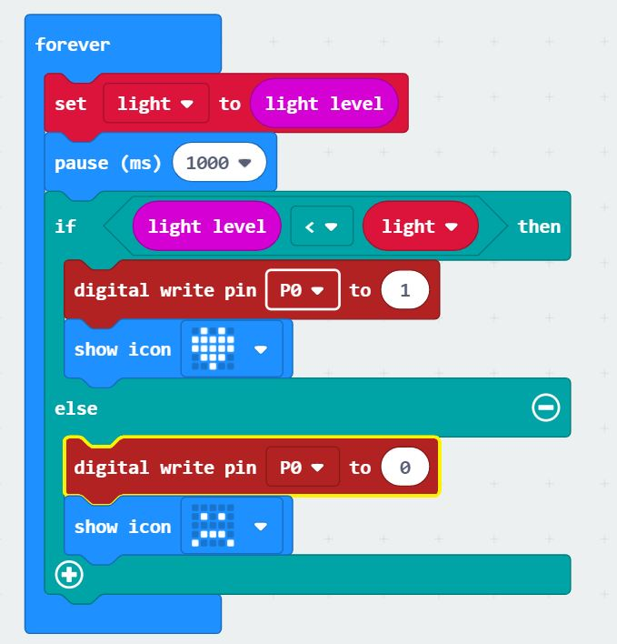

Week 5 - Continuation of html and p5.js Video Player
html
We have finally figured out how to centralize our images and texts! Our avatars even change
Ideas
- Mirror screams when someone sits in fornt of it.(light sensor)
- Mirror screams when it is opened.(gesture)
Coding
Gesture
Alarm and LED react to different gestures.

Light Sensor
Alarm goes off and LED changes when light level decreases.
